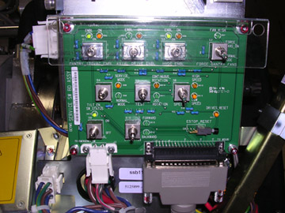

Illustration 2: Service Orientation for Gantry Tilt

| NOTE: | Do NOT use the cover panel controls as they will NOT tilt the gantry all the way to the stop blocks. |
Illustration 2: Service Orientation for Gantry Tilt
Illustration 3: Service Switch Panel
